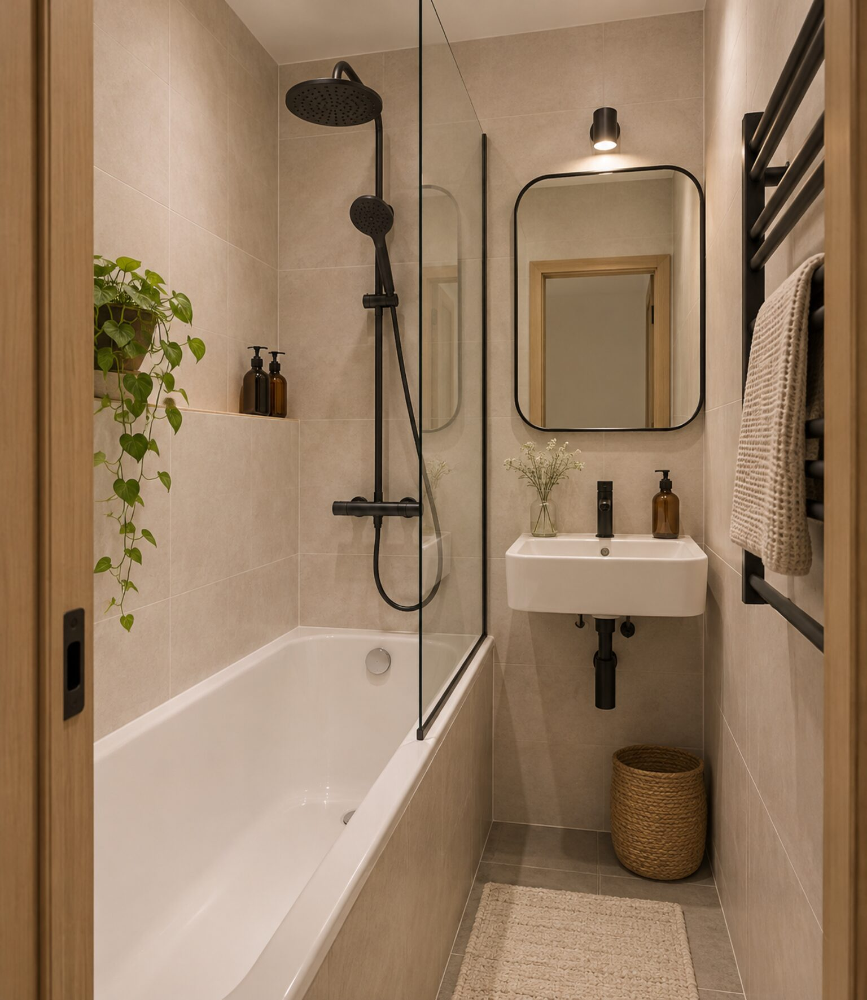
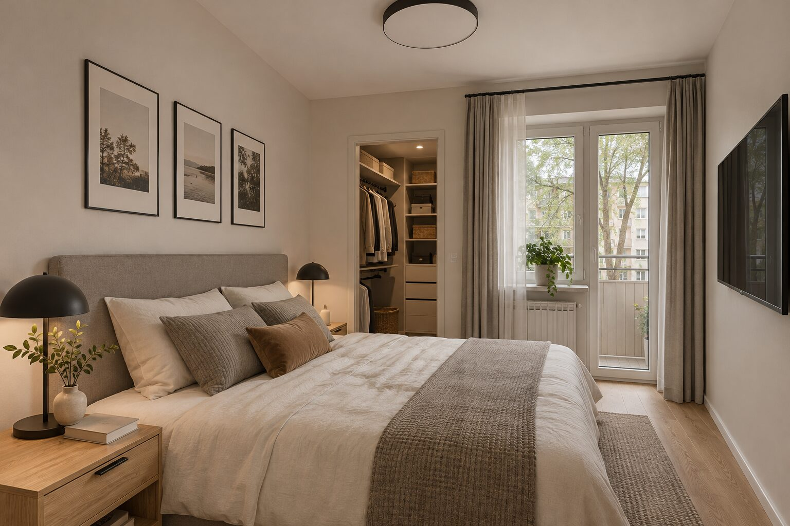
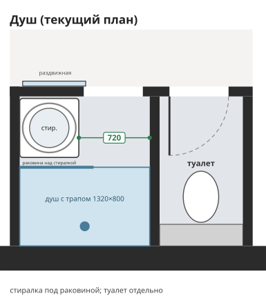
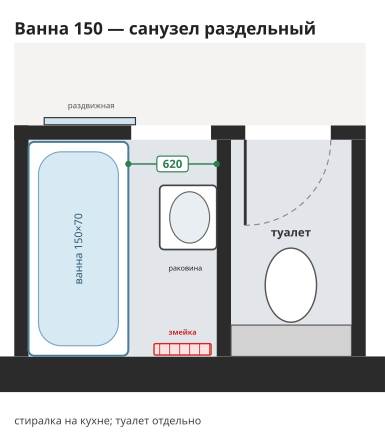
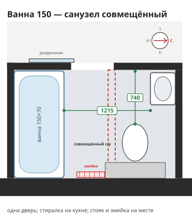
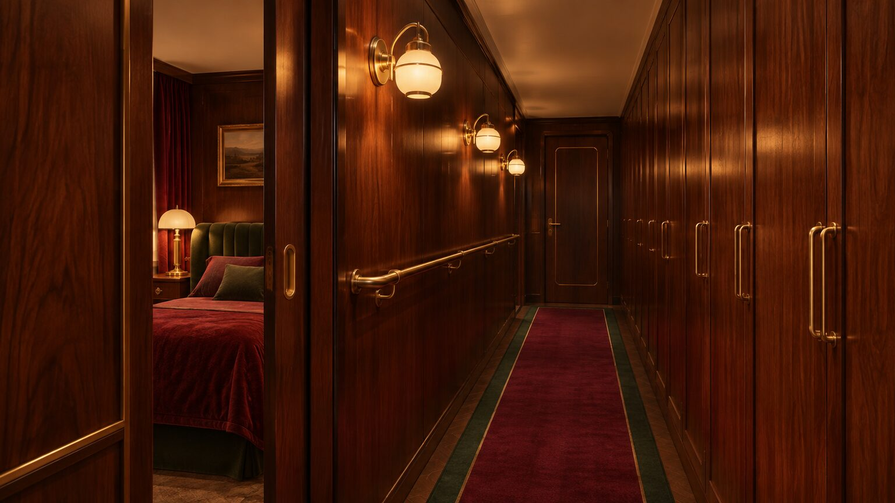
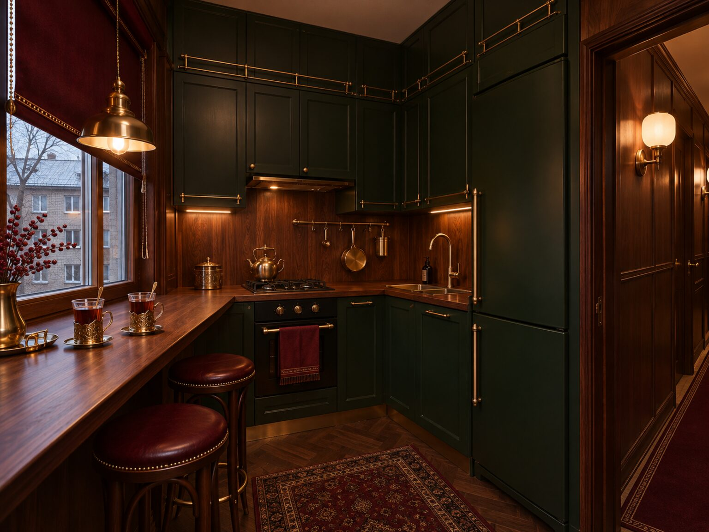
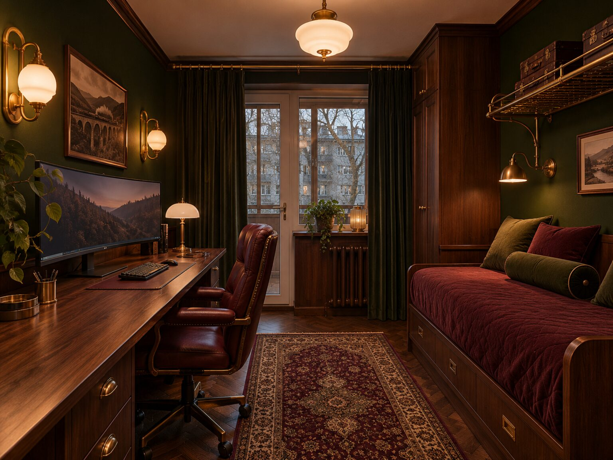
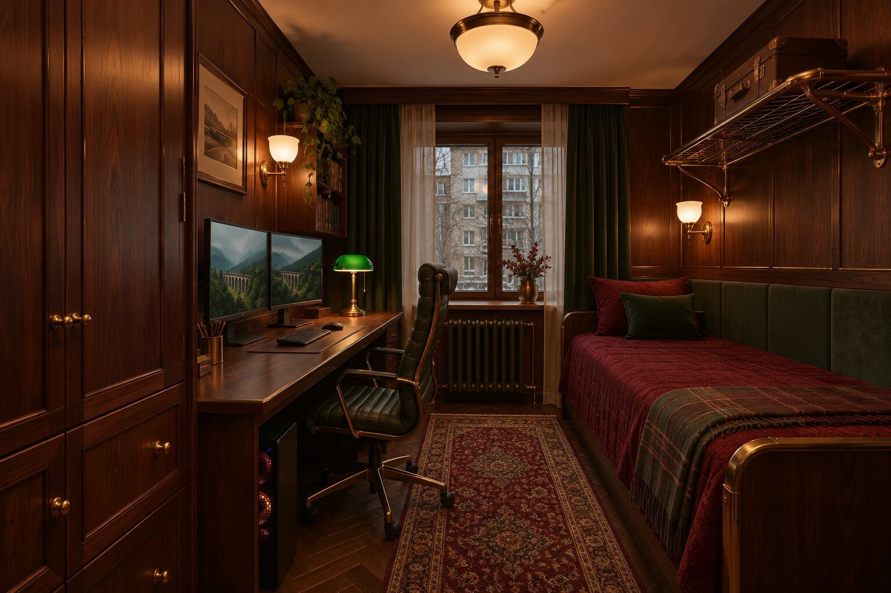
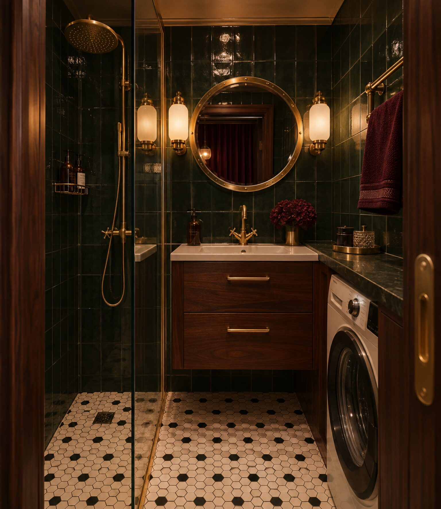

1. Планировка и эргономика
Одна расстановка для всех стилей: стиль меняет цвета и материалы, а не то, где стоит мебель. Задача — удобно ходить и максимально использовать каждый сантиметр.
Эргономика
- Все двери открываются в свободную зону и прижимаются к стене; мебель их не перекрывает. Санузел и спальня 2 — раздвижные двери, туалет — внутрь (унитаз дальше радиуса двери).
- Прихожая полностью свободна: проход 1000 мм; обувь и верхняя одежда — в шкафу холла и на скамье в стороне от пути.
- Основные проходы 860–1320 мм (норма 900+), в спальнях — 690–980 мм (норма второстепенного 600+), зона стула у стола 880–940 мм (норма 900).
- Столы — у глухих стен, окно слева от сидящего: свет не бликует на мониторах и не даёт тени от правой руки.
- Шкафы в спальнях — купе: раздвижным дверям достаточно 600 мм перед фасадом, распашным нужно 750+.
- Всё, что можно, ушло на высоту (пунктир на плане): полки, антресоли, верхние шкафы до потолка — пол остаётся свободным.
Хранение — где и сколько
| Где | Что | Объём |
|---|---|---|
| Гардеробная (комната «Купе») | П-образная система: штанги + полки + обувь | ≈ 4,7 м |
| Холл | Шкаф 600×2500 до потолка, внизу — обувь | 2,5 м |
| Спальня 1 | Шкаф-купе 600×1900 до потолка | 1,9 м |
| Спальня 2 | Шкаф-купе 600×1690 до потолка + комод 1400 | 1,7 м + комод |
| Кровати | Ящики под матрасом (120×200 и 90×200) | ≈ 1 м³ |
| Над столами | Две полки над каждым столом (1600 и 1800) | 6,8 м полок |
| Кухня | Нижние шкафы 3 м + верхние до потолка в 2 яруса, шкаф над холодильником | ≈ 3 м низ + 2,7 м верх |
| Прихожая | Антресоль над входом на высоте от 2,1 м; на полу — ничего | ≈ 0,6 м³ |
| Санузел | Зеркальный шкаф, ниша в душе, раковина над стиральной машиной | — |
| Туалет | Шкаф над инсталляцией унитаза до потолка | ≈ 0,3 м³ |
| Балкон | Шкаф в торце балкона 900×550 | 0,9 м |
| Холл у кухни | Скамья-обувница 350×850 | 0,85 м |
| Итого шкафов для одежды | ≈ 10,8 м | |
1б. Другие планировки
Варианты, которые отходят от исходной задачи «две спальни-кабинета»: гостиная, кабинет, гардеробная при спальне, ванна вместо душа. Кухня во всех вариантах остаётся на месте — переносить мокрые зоны над жилыми комнатами соседей нельзя.
A. Спальня + гостиная, ванна 150
Для пары; работа из дома — иногда. Без перепланировки.
- Спальня: кровать 160×200, по 1 м свободно с каждой стороны, ТВ на стене; одежда — в гардеробной.
- Спальня 2 → гостиная: диван-кровать 2,2 м для гостей, ТВ, рабочий угол у окна (стол 1200×600).
- Санузел: ванна 150×70 вместо душа; стиральная машина — на кухню вместо посудомойки.
Плюсы: Ничего не нужно согласовывать; появляется настоящая гостиная.
Минусы: Одно полноценное рабочее место; нет посудомойки; в ванной проход 620 мм.

B. Открытая гостиная + кабинет в «Купе», ванна 170
Для одного-двух человек, кто работает за ПК и любит гостей. Снос перегородки спальня 2 / холл + объединение ванной и туалета — нужно согласование.
- Перегородка между спальней 2 и холлом убрана: гостиная-столовая ≈ 17 м² вместе с холлом, стол на 4 у окна.
- «Купе» → кабинет-«капсула» без окна: стол 1920×700, полки; дверь открывается в холл.
- Спальня: кровать 140×200 + шкаф-купе 1,9 м.
- Совмещённый санузел: ванна 170×75, подвесной унитаз, стиралка под раковиной, одна дверь.
Плюсы: Холл получает дневной свет из окна гостиной; полноценный обеденный стол; кабинет изолирован от спальни.
Минусы: Кабинет без окна — нужен приток воздуха и яркий ровный свет; прихожая открыта в гостиную; стену нужно проверить — она не должна быть несущей.
C. Спальня с гардеробной + детская, ванна 170
Для семьи с ребёнком или пары + кабинет. Новый проём спальня → гардеробная + объединение ванной и туалета — нужно согласование.
- Вход в гардеробную — из спальни (новый проём), дверь из холла закладывается; на освободившейся стене холла — ещё один шкаф.
- Спальня: кровать 160×200, ТВ на стене.
- Спальня 2 — детская или кабинет: стол 1800×700, шкаф-купе 1,7 м, кровать 90×200.
- Совмещённый санузел с ванной 170×75.
Плюсы: «Родительская» зона с собственной гардеробной; ванна; хранение в холле буквой Г.
Минусы: Утром один санузел на всех; две перепланировки.

Санузел: душ или ванна



| Душ (текущий) | Ванна 150, раздельный | Ванна 170, совмещённый | |
|---|---|---|---|
| Ванна / душ | душ 1320×800 с трапом | ванна 150×70 | ванна 170×75 |
| Стиральная машина | под раковиной | на кухне вместо посудомойки | под раковиной |
| Свободное место | 720×720 мм | проход 620 мм | 950×770 мм |
| Туалет | отдельно | отдельно | в том же помещении |
| Согласование | не нужно (трапу нужен подъём пола ~10 см и гидроизоляция) | не нужно | нужно — объединение санузлов |
| Плюсы | просторно, легко убирать | ванна без перепланировки | большая ванна, всё в одном месте |
| Минусы | нет ванны | тесно, нет посудомойки | утром одна дверь на всех |
2. Цветовые решения
8 палитр — от светлых до тёмных. У каждого цвета своя роль и место. Коды NCS — ориентир для подбора краски в магазине.
- 60 / 30 / 10. 60% — основной цвет (стены), 30% — второй (мебель, фасады, пол), 10% — акцент (текстиль, декор, одна стена).
- Маленькая площадь. Один основной цвет на всю квартиру и сквозной пол без порогов — квартира читается как единое пространство и кажется больше.
- Холл без окна. В светлых стилях — светлые матовые стены и много света; в тёмных — темнота допустима, но потолок светлее и обязательно 2–3 сценария света.
- Тёмные стили при потолке 2,6 м. Потолок светлее стен (кроме тёмного минимализма, где его красят в цвет стен намеренно); хорошая подсветка — обязательна.
- Проверка краски. Цвета на экране приблизительные, коды NCS — ориентир. Пробник 50×50 см на стене, смотреть утром, днём и вечером при своих лампах (CRI ≥ 90): один и тот же цвет при тёплом и дневном свете выглядит по-разному.
Japandiсветлый
S 0502-Y
S 2005-Y20R
S 3020-Y60R
S 1005-Y20R
Mid-century modernтёплый
S 1005-Y20R
S 3040-Y70R
S 4020-G90Y
S 2060-Y20R
Светлый минимализмсветлый
S 0500-N
S 1500-N
S 7502-B
S 5040-R90B
Ретро-поездтёмный
S 7020-G10Y
S 5040-R
S 1010-Y20R
Тёмный минимализмтёмный
S 7502-Y
S 8000-N
S 4050-Y70R
Киберпанктёмный
S 9000-N
S 8005-R80B
Ар-деконасыщенный
S 6030-B90G
S 7020-R80B
Средиземноморьесветлый
S 0804-Y30R
S 3040-Y60R
S 4055-R80B
S 3010-G50Y
3. Отделка и декор
Чем отделать каждую поверхность, какой свет и какие предметы создают стиль. Нажмите на стиль, чтобы раскрыть.
Japandiсветлый
Тишина и тепло: светлое дерево, натуральные ткани, минимум предметов.
| Пол | Инженерная доска или кварцвинил «дуб натуральный», ёлочка, единый по всей квартире; санузлы — керамогранит под микроцемент 60×120. |
| Стены | Матовая моющаяся краска; акцентная стена в спальнях — декоративная штукатурка «глина»; дубовые рейки у изголовья. |
| Потолок | Окраска, матовый белый; теневой профиль вместо плинтуса; без многоуровневых конструкций. |
| Двери | Скрытого монтажа под покраску в цвет стен; спальня 2 — раздвижная «сёдзи»: дуб + матовое стекло. |
| Кухня | Низ — шпон/ЛДСП дуб, верх — матовая эмаль; столешница светлый кварц; фартук — керамика ручной формовки. |
| Санузел | Микроцемент или керамогранит тёпло-серый; подвесная тумба дуб; смесители чёрные матовые; круглое зеркало с подсветкой. |
| Свет | Подвесы из рисовой бумаги (общий, 2700–3000K); трек в холле; подсветка цоколя шкафов; настольные лампы 4000K на столах. |
| Текстиль | Лён, хлопок, шерсть; шторы натуральный лён; ковры джут/шерсть. |
| Декор | Керамика, ветки в вазах, графика тушью, 2–3 крупных растения. Правило: меньше, но лучше. |
Mid-century modernтёплый
Орех, тёплые цвета середины века, мебель на тонких ножках, игривые детали.
| Пол | Паркет или кварцвинил «орех», ёлочка; у входа и в санузлах — керамогранит под терраццо. |
| Стены | Молочная матовая краска; терракотовая акцентная стена; арочный портал в кухню. |
| Потолок | Окраска, белый; без молдингов. |
| Двери | Шпон ореха, латунные ручки-кнопки. |
| Кухня | Оливковые фасады с латунными ручками, верх молочный; столешница дерево под маслом или кварц; фартук — глазурованная плитка «кабанчик» зелёная. |
| Санузел | Пол — терраццо; в душе — оливковый зеллиж; тумба орех; латунная сантехника; арочное зеркало. |
| Свет | Шары из опалового стекла, бра на шарнирах, торшер в духе 50-х; 2700K, рабочий свет на столах 4000K. |
| Текстиль | Бархат и букле горчица/олива, геометрические ковры. |
| Декор | Постеры и графика середины века, керамика, монстера и пилея, настенные часы-«солнце». |
Светлый минимализмсветлый
Максимум света и воздуха: белый, графит и один акцентный цвет.
| Пол | Керамогранит «светлый камень» 60×120 по всей квартире (или светлый кварцвинил в спальнях). |
| Стены | Белая матовая краска; панель графит за изголовьем; зеркальная панель в холле. |
| Потолок | Окраска + встроенные световые линии (или натяжной матовый со световыми линиями). |
| Двери | Скрытые под покраску; спальня 2 — раздвижная в чёрном алюминии с рифлёным стеклом. |
| Кухня | Белые фасады без ручек (профиль Gola), сатин; столешница графит (кварц/керамика), фартук в тон. |
| Санузел | Керамогранит-слэбы светлый камень, ниша графит; подвесная белая тумба; чёрная матовая сантехника; линейный трап. |
| Свет | Линейные встроенные светильники 3000–4000K, подсветка-карниз, тонкие подвесы; CRI ≥ 90. |
| Текстиль | Белый тюль; синие шторы-блэкаут в спальнях; серые ковры с коротким ворсом. |
| Декор | 1–2 крупные фотографии или графика, стекло, белые цветы. Открытых полок — минимум. |
Ретро-поездтёмный
Спальный вагон: тёмное дерево, латунь, бордо и бутылочно-зелёный; «Купе» — настоящее купе поезда.
| Пол | Паркет «тёмный орех», ёлочка; в холле — ковровая дорожка красная с зелёной каймой; санузел — шестигранник ч/б. |
| Стены | Буазери: панели МДФ в шпоне ореха до 1,2 м, выше — краска бутылочно-зелёная; в «Купе» — панели под дерево полностью. |
| Потолок | Светлый кремовый — тёмным стенам нужен светлый потолок, иначе при 2,6 м будет давить. |
| Двери | Шпон ореха, латунь; «Купе» — раздвижная купейная дверь с зеркалом. |
| Кухня | Тёмно-зелёные филёнчатые фасады, латунные рейлинги и ручки, столешница орех; фартук — зелёная плитка. |
| Санузел | Тёмно-зелёная глянцевая плитка, тумба орех, латунная сантехника, круглое зеркало в латуни. |
| Свет | Бра с молочными плафонами, «банкирская» зелёная лампа на столе, 2400–2700K. В «Купе» — бра над полками и экран-«окно» (ТВ в раме с закруглёнными углами и рулонной шторой). |
| Текстиль | Бордовая кожа/кожзам на полках купе, бархат, шерстяные пледы в клетку, плотные шторы. |
| Декор | Подстаканники, багажные полки с латунными рейлингами, сетки для вещей, старые карты железных дорог, фотографии поездов. |
Тёмный минимализмтёмный
Глубокие графитовые стены, копчёный дуб, травертин и тёплый скрытый свет — уютно и камерно.
| Пол | Инженерная доска «копчёный дуб»; санузлы — тёмный микроцемент или керамогранит. |
| Стены | Глубокая матовая краска графит (моющаяся, с высокой укрывистостью); травертин акцентами. |
| Потолок | В цвет стен или на тон светлее — граница стена/потолок «растворяется»; скрытый карниз с подсветкой. |
| Двери | Скрытые, окрашены в цвет стен; раздвижная — тонированное стекло. |
| Кухня | Чёрные матовые фасады с покрытием анти-отпечатки, столешница тёмный камень, барная стойка из копчёного дуба. |
| Санузел | Тёмный микроцемент, травертиновая столешница, чёрная сантехника, зеркало с подсветкой. |
| Свет | Только тёплый 2700K: скрытые линии, wall-washer, точечные акценты. На столах обязательно рабочий свет 4000K — в тёмной комнате глаза устают быстрее. |
| Текстиль | Лён графит и табак, шерсть, ржавые акценты. |
| Декор | Травертин, керамика ручной работы, сухоцветы, одна крупная абстрактная картина. |
Киберпанктёмный
Чёрная база, неоновая подсветка, акустика — под игры, стримы и работу за ПК.
| Пол | Тёмный кварцвинил «бетон» или «дуб графит». |
| Стены | Чёрная матовая краска; акустические панели (войлок, гексагоны) за мониторами — заодно глушат звук между комнатами. |
| Потолок | Чёрный или тёмно-серый, LED-профили. |
| Двери | Чёрные; раздвижная — тонированное стекло. |
| Кухня | Чёрные фасады, столешница под бетон, LED-лента под верхними шкафами. |
| Санузел | Чёрная шестигранная плитка, чёрная сантехника, ниша с RGB-подсветкой. |
| Свет | Умные RGB-ленты (Wi-Fi), но основной белый свет обязателен: 3000–4000K, CRI ≥ 90 — один неон для глаз вреден. |
| Текстиль | Шторы-блэкаут, тёмные пледы. |
| Декор | Постеры, фигурки на полках, неоновая вывеска, растения под фитолампой. |
Ар-деконасыщенный
Изумруд, тёмно-синий, золото, бархат и мрамор — роскошь 1920-х в современной подаче.
| Пол | Паркет орех ёлочкой; в холле и санузлах — керамогранит/мрамор ч/б с геометрией. |
| Стены | Краска изумруд/тёмно-синий; обои с веерным геометрическим узором на акцентной стене; рифлёные панели. |
| Потолок | Белый или кремовый, тонкий карниз. |
| Двери | Филёнчатые тёмно-синие с латунью; вставки из рифлёного стекла. |
| Кухня | Изумрудные фасады, золотые ручки, мраморная (или кварц под мрамор) столешница и фартук. |
| Санузел | Изумрудная глянцевая плитка, ч/б мрамор на полу, золотая сантехника, арочное зеркало в латуни. |
| Свет | Веерные бра, люстры с ребристым стеклом, латунь; 2700K. |
| Текстиль | Бархат изумруд/горчица/синий, ковры с геометрическим орнаментом. |
| Декор | Зеркала в латунных рамах, вазы, графика 20-х, гортензии и розы. |
Средиземноморьесветлый
Солнечный юг: белая штукатурка, терракота, кобальт, ротанг и арочные ниши.
| Пол | Керамогранит под терракоту в холле, кухне, санузлах; в спальнях — светлый дуб. |
| Стены | Декоративная известковая штукатурка белая; арочные ниши в холле и спальнях. |
| Потолок | Белая штукатурка; балки не делать — при 2,6 м съедят высоту. |
| Двери | Деревянные: натуральные или крашенные в кобальт; вставки из ротанга. |
| Кухня | Шалфейные фасады, фартук — плитка с синим орнаментом, столешница олива/дерево. |
| Санузел | Белый зеллиж, синяя плитка с орнаментом на полу, тумба олива, арочное зеркало. |
| Свет | Плетёные абажуры из ротанга, керамические бра; 2700–3000K. |
| Текстиль | Лён, сине-белая полоска, джутовые ковры. |
| Декор | Синяя керамика, кувшины, оливковые ветки, плетёные корзины. |
4. Визуализации
ИИ-картинки (gpt-image-2.6) показывают настроение, цвет и материалы, но не точную геометрию — расстановка мебели определяется планом из раздела 1.
Japandiсветлый


Mid-century modernтёплый


Светлый минимализмсветлый


Ретро-поездтёмный






Тёмный минимализмтёмный

Киберпанктёмный

Ар-деконасыщенный


Средиземноморьесветлый